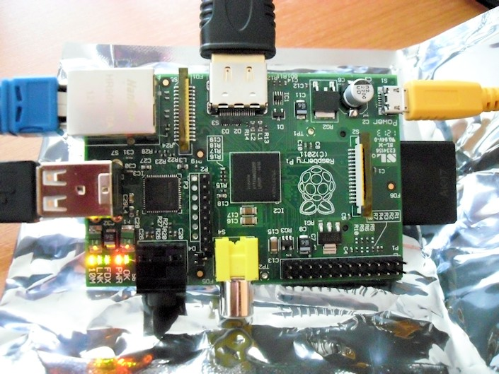
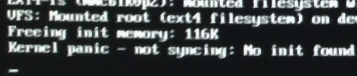

Biztos hallottatok már a Raspberry Piról. Az úgy volt, hogy első nap rendeltem egyet.
Szóval, február végén, az indulás reggelén (7-kor) ott ültem a gép előtt, és próbáltam magamnak szerezni egyet, közben chateltünk az egyik volt tanárommal, hogy ki hol tart éppen a rendelésben, melyik terjesztő oldala elérhető, illetve elérhetetlen (mindkét nagy terjesztő szerverei lehaltak). Néztük a hivatalos Twitter feedet, nyomtuk egymásnak az infókat. Igazi „hajsza” hangulata volt a dolognak.
A vége az lett, hogy Gábor a Farnellnél, én pedig az RS Componentsnél adtam le a rendelésemet. Gábor a héten megkapta az övét, nekem meg RS Components még válaszolni sem igazán hajlandó, hogy hol állok a várakozási sorban. Most ott tartok, hogy már a nemzetközi és a brit RS-nek is írtam. Egyelőre semmit sem tudok, viszont egyre inkább kezdem elveszíteni bennük a hitem. De ennyit erről, és most jöjjön a lényeg.

A képen Gábor Raspberry Pi-ja látható. Tegnap bementem a tanszékre lecsekkolni. Valóban egy bankkártya méretű, lenyűgöző kis cucc. Gyorsan be is bootoltunk egy OpenELEC-et.
Open Embedded Linux Entertainment Center, or OpenELEC for short, is a small Linux distribution built from scratch as a platform to turn your computer into a complete XBMC media center. OpenELEC is designed to make your system boot as fast as possible and the install is so easy that anyone can turn a blank PC into a media machine in less than 15 minutes.
Szépen bejött az XMBC, de már a menű szaggatott, és ~80%-on zabálta a procit. Több, mint valószínű, hogy szoftver renderinget láttunk. Szóval még nem tökéletes, közel sem. Videólejátszás közben a proci egyáltalán nem dolgozott, viszont az 1080p-s Ötödik elem teljesen darabos volt. Több, mint valószínű, hogy driver gond. :)
Aztán bebootoltuk (volna) az előre elkészített, és használatra ajánlott Debian image-et, de kernel panicba ütköztünk.

Minden jel szerint nem volt jó neki a noname SD kártya. Kicsit finnyás szegénykém, de sebaj. Másik SD kártyáról simán elindult a cucc. Igazából csak arra voltam kíváncsi, hogy van-e hozzá valami repó is, vagy egy Debian image és kész. Jelentem, repó van, ez nagyon biztató! Feltettünk hát egy VLC-t, de elindulni már nem volt hajlandó. :) Elég béta még, de nem vagyok telhetetlen, mert amint elkezdik nagy tételben gyártani és kiszállítani (remélem nekem is) a Raspberry Pi-t, úgy fog nőni a hozzájárulások száma.
Jó lett volna megnézni az Arch Linux ARM-ot, de sajnos erre már nem volt időnk. Remélem jövő héten még lesz erre alkalmam.
{kind=link}
{kind=link}
{kind=link}
{kind=link}
{kind=link}